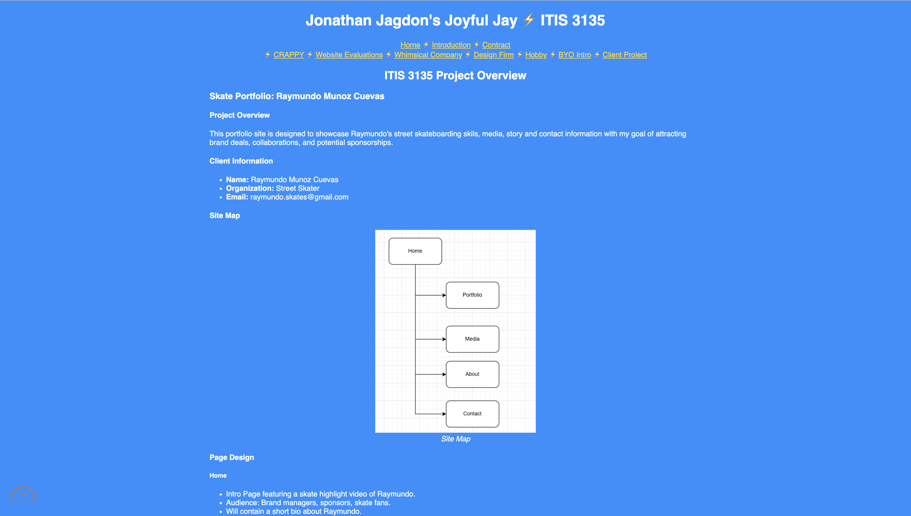

Review 2 - Jagdon, Jonathan

Skate Portfolio
- I do not see any uppercases or spaces in file or folder names.
- Design:
- Yes, this page has suffcient contrast and font sizing so it is easy to read.
- Yes, this page has site colors and fonts using the standard .css file
- Crap:
- Contrast: There no contrast problems.This page is easy to read.
- Repitition: Each page has the same styling across.There is no variety.
- Alignment: The alignment looks good across the page.
- Proximity: All sections look to be grouped together correctly.
- Each page has a header, main, and footer within it.
- The header has a h1 with the name of the website
- The main starts with an h2
- The page has the correct footer links.
Other Comments
- I could not see your actual client project, so I just did it based off your project overview.
- I would just recommend some more and better styling options. Your page looks good, there just isn't anything to make it stand out.